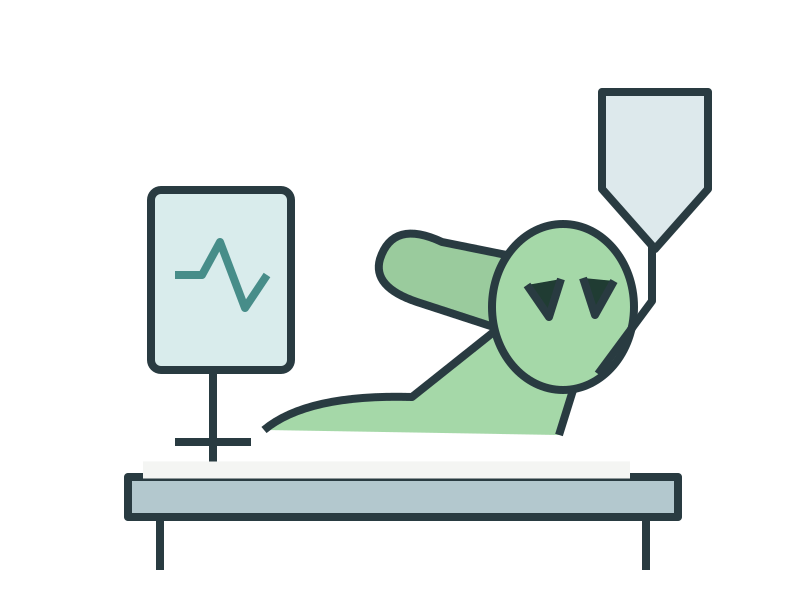
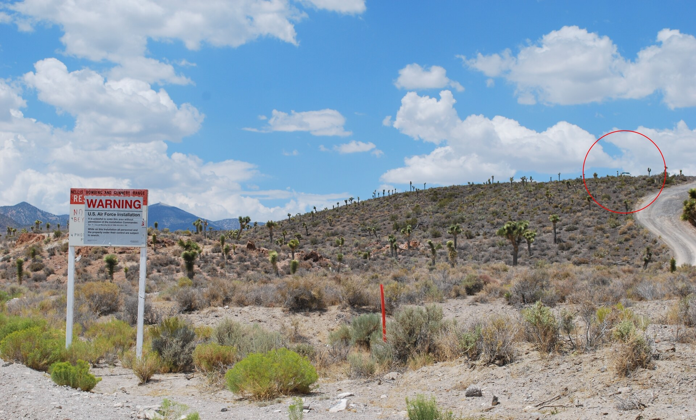
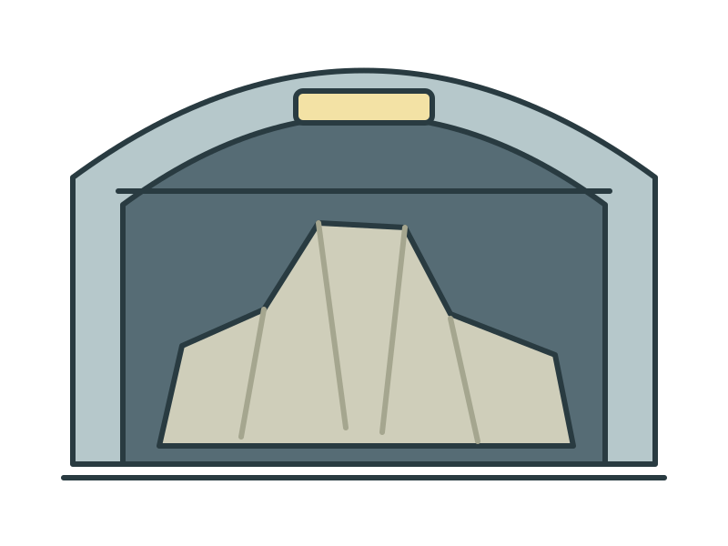
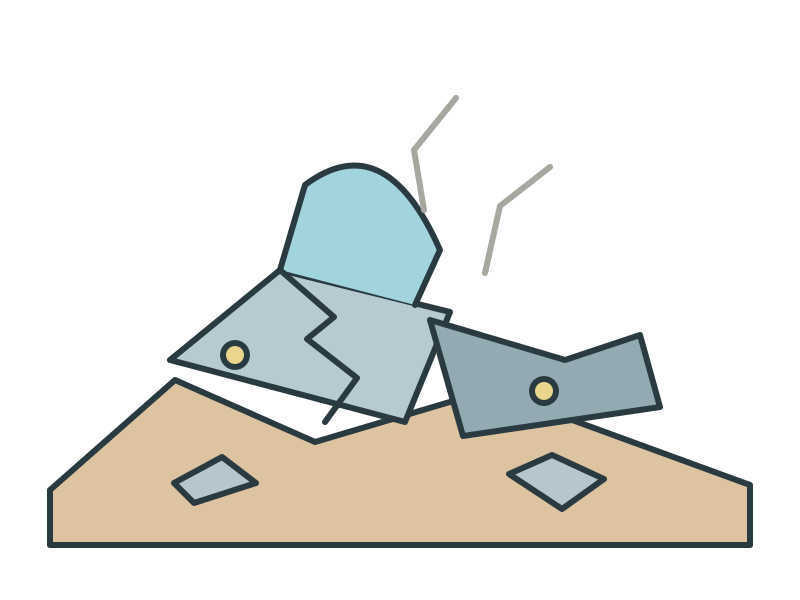
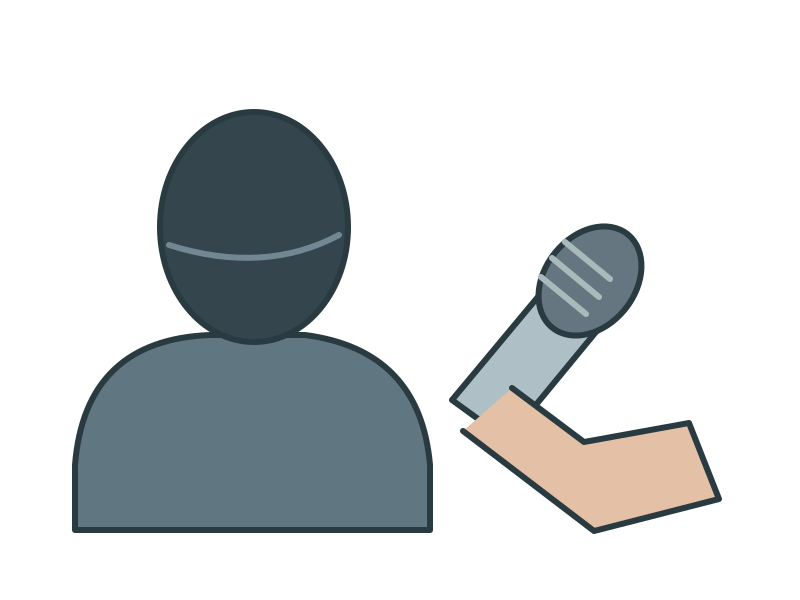
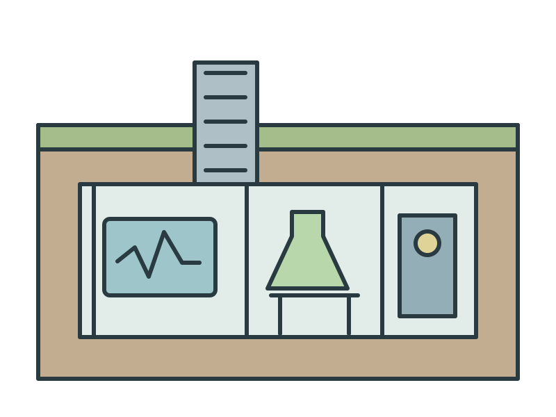
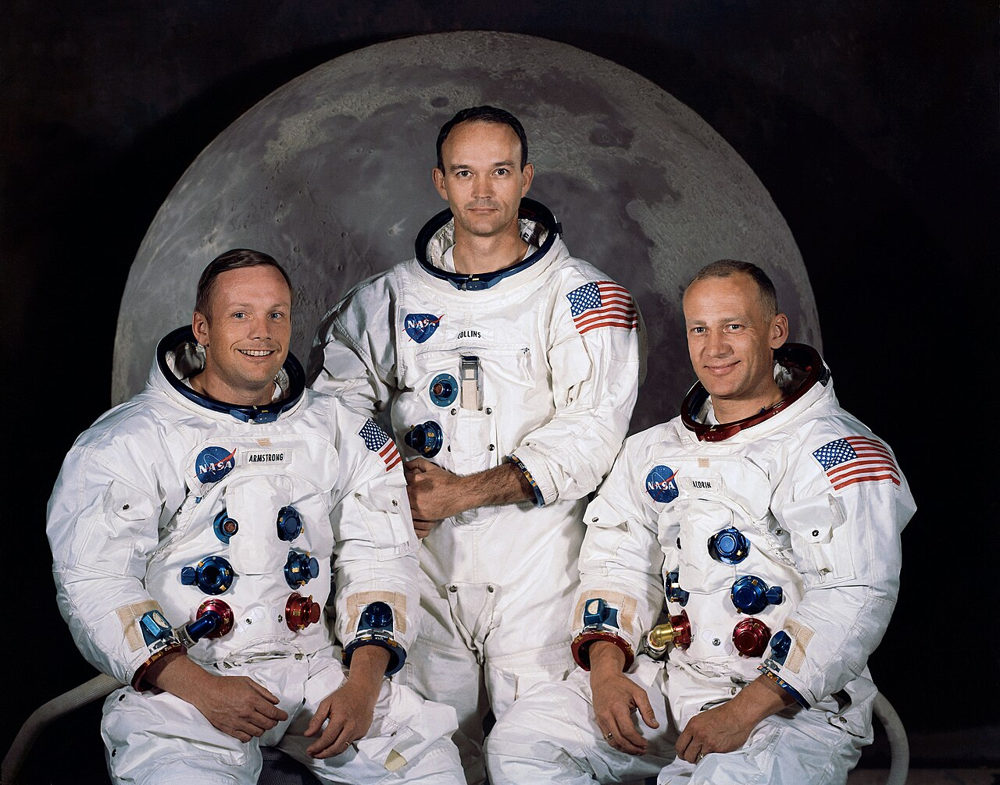
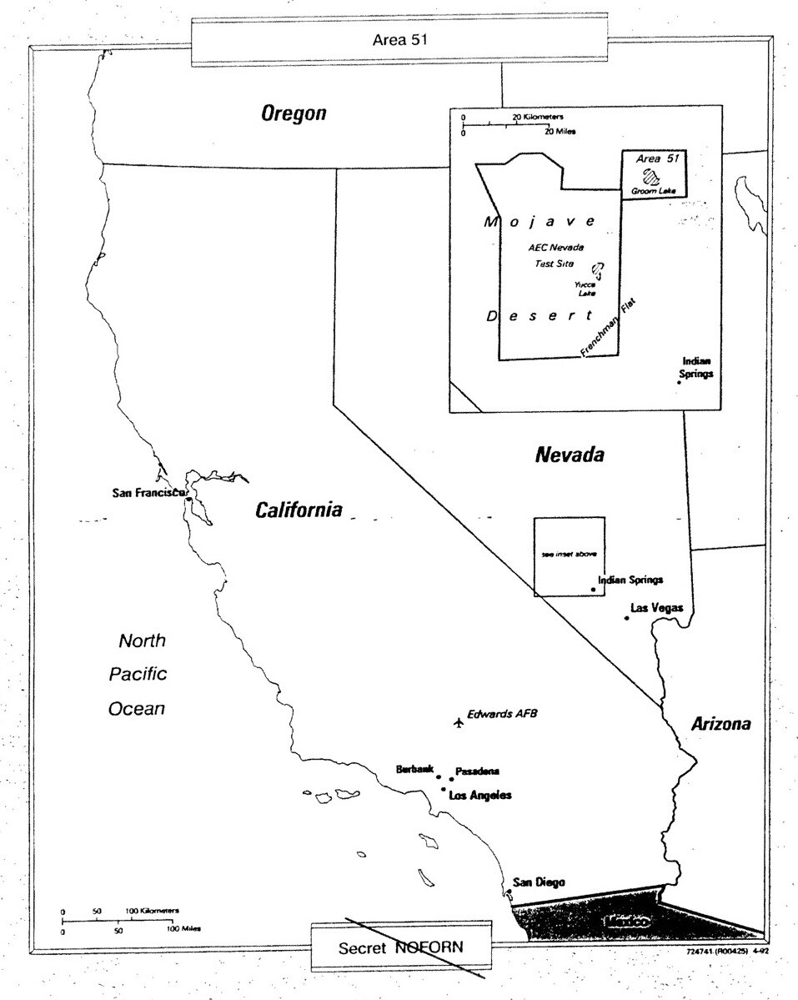
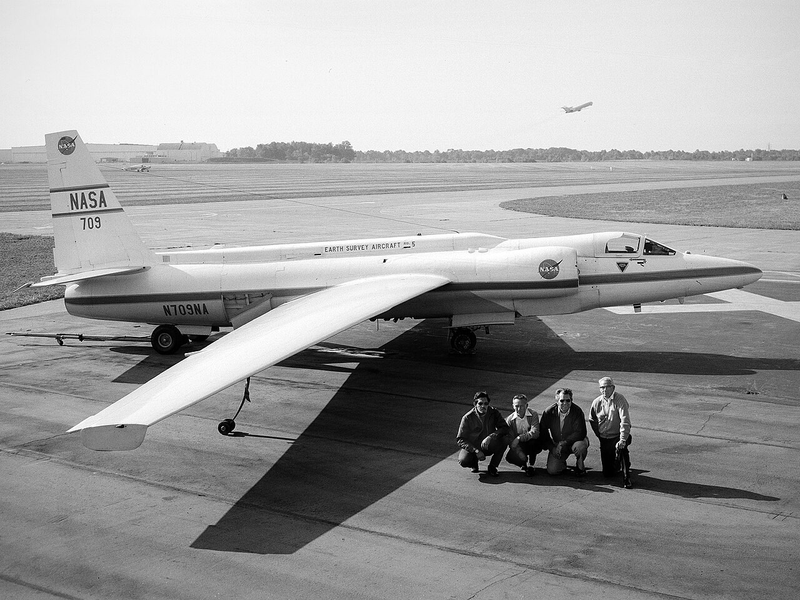
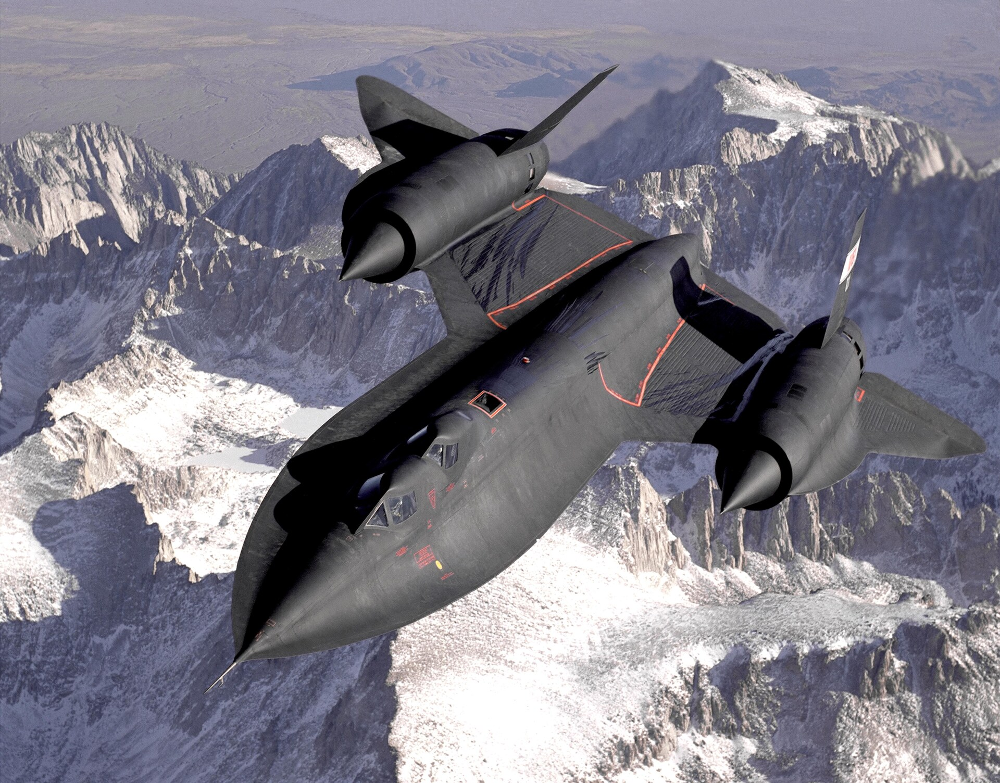

ÁREA 51
Relatos de avistamentos
Segredo militar ou extraterrestres?
Interface ilustrativa


No deserto de Nevada
Doc Searls • CC BY 2.0
Alienígenas?
OVNIs...

...experimentos secretos?

Uma base militar
Por muito tempo...
O que escondiam ali?
O que havia atrás dessa porta?

Guerra Fria
Trajetória ilustrativa • não é registro de radar
Objetos cruzando o céu
Era a crença que ganhava força
Tecnologia extraterrestre?

Guardadas na base?

Naves acidentadas?
O mistério ganhou a mídia
O assunto chegou às manchetes
Interface ilustrativa
E a internet ampliou o alcance
Sigilo governamental

Ex-funcionários e supostas testemunhas
Autópsias?

Laboratórios subterrâneos?
Arquivos sobre fenômenos não identificados
US Navy • FLIR1 • registro de 2004
INICIATIVA CITADA NA NARRAÇÃO
arquivos
Fonte específica ainda não confirmada
Detalhes citados na narração
Trajetória ilustrativa • não é registro de radar
Relatos de movimentos incomuns

Programa Apollo
NASA • Public domain
Relatos citados na narração
Vida extraterrestre?
É o que afirmam as autoridades

A base e o sigilo militar

U-2 • aeronave de reconhecimento
NASA • Lockheed U-2

Reconhecimento e testes
US Air Force • SR-71
O público ainda não conhecia